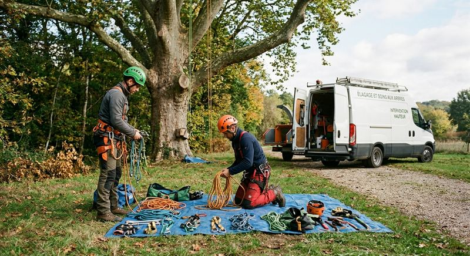

À propos
L'arbre au cœur de notre métier.
CALICE ESPACES VERTS est une entreprise de travaux paysagers installée à Viry-Châtillon, dirigée par Arnaud Bouille.

L'entreprise en bref
Une entreprise de proximité en Essonne.
CommuneViry-Châtillon (91)
DirigeantArnaud Bouille
ActivitéAménagement paysager
SpécialitéL'arbre : élagage, abattage
ClientsParticuliers et copropriétés
Zone20 km autour de Savigny-sur-Orge
Avis de clients
Ce que disent ceux qui nous ont fait confiance.
Extraits d'avis publiés par des clients de l'entreprise.
Valérie M.
« Excellent travail répondant à mes attentes. »
Joëlle L.
« Fiable, soigné, raisonnable. Une équipe adorable, un travail remarquable, un nettoyage minutieux du jardin et du toit. »
Céline M.
« Clients depuis 5 ans chez Calice espaces verts, nous ne sommes jamais déçus par les résultats ! »

Sécuriser, transformer, embellir
Des extérieurs en sécurité, puis embellis.
L'entreprise retire les végétaux fragiles ou gênants, puis transforme et embellit les espaces, quelle que soit leur surface.
Voir les prestationsFaisons connaissance
Le plus simple : en parler.
Un appel ou un message, et nous étudions votre projet.